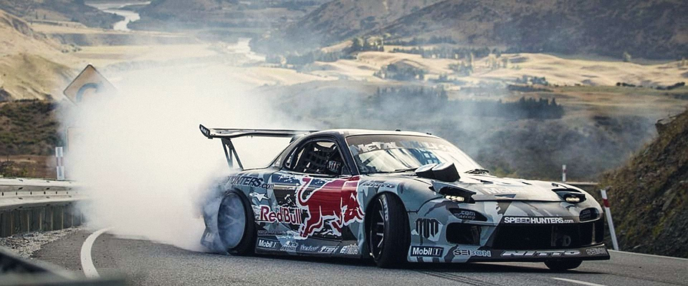
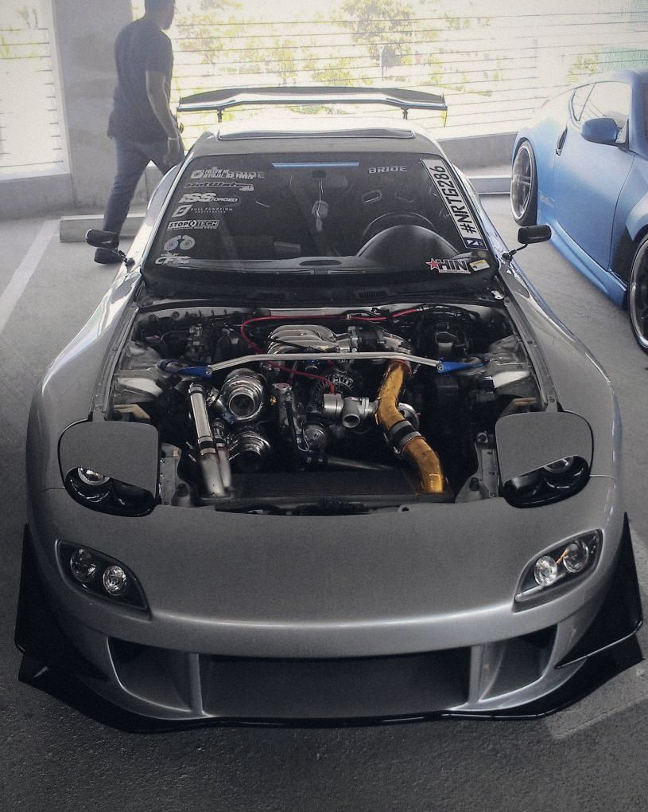
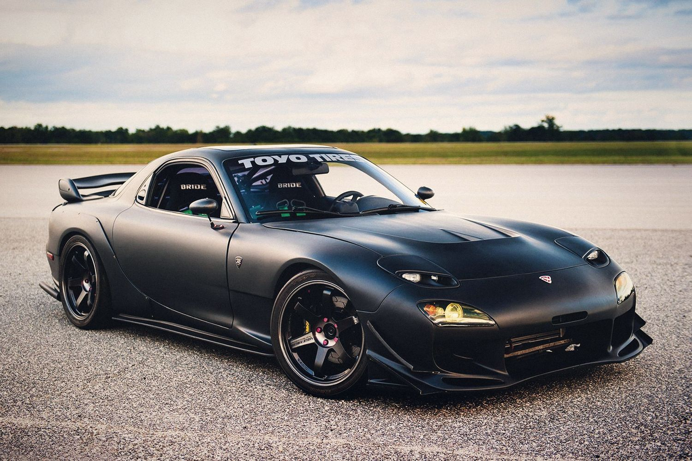
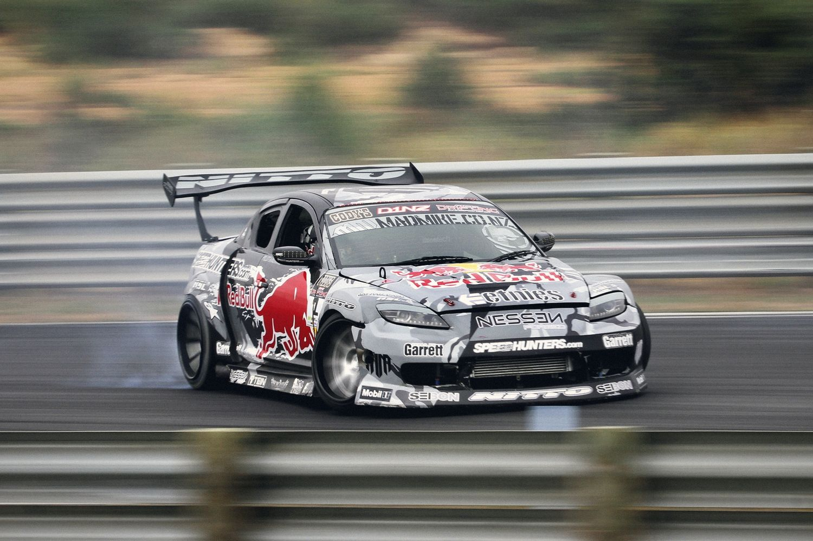

El motor rotativo no tiene pistones que suben y bajan. Tiene un triángulo que da vueltas dentro de una carcasa. Aquí te lo explico con dibujos que se mueven, sin palabras raras.
Siete entradas cortas · unos 10 minutos en total
2 rotores × 654 ccmotor 13B
3 : 1vueltas del eje por vuelta del rotor
9.000 rpmlímite del RX-8

Fig. 1Un RX-7 de tercera generación en pleno drift. Detrás de todo ese humo hay un motor sin pistones.
Entrada 1 · 2 min
¿Qué tiene de raro este motor?
Casi todos los carros usan un motor de pistones: cilindros de metal que suben y bajan muy rápido. Ese movimiento de sube y baja luego se convierte en giro para mover las ruedas.
El motor rotativo se salta ese paso. Su pieza principal, el rotor, ya gira desde el principio. Mira los dos funcionando a la misma velocidad.
Motor de pistón
Las cuatro fases pasan en el mismo lugar, una detrás de otra. Necesita válvulas que se abren y cierran.
Explosiones: 0 · una cada 2 vueltas del eje
Motor rotativo
Cada fase tiene su propio lugar dentro de la carcasa, y las tres caras del rotor trabajan a la vez.
Explosiones: 0 · una por cada vuelta del eje
4 cilindros, 16 válvulas
≈ 43
Rotativo de 2 rotores
3
Piezas principales en movimiento, contadas a grandes rasgos: pistones, bielas, cigüeñal, árboles de levas, válvulas y resortes frente a dos rotores y un eje.
Entrada 2 · 3 min · interactiva
Las cuatro fases, en un solo giro
Todo motor de gasolina hace lo mismo: aspira aire con combustible, lo aprieta, lo quema y expulsa el humo. En el rotativo, el espacio entre cada cara del rotor y la pared crece y se encoge mientras gira. Ese cambio de tamaño hace todo el trabajo.
Sigue a la cara marcada con la A. Puedes pausar, avanzar fase por fase o arrastrar el motor con el dedo.
Arrastra el motor hacia los lados para girarlo a mano
Admisión
La cara A aspira
AdmisiónCompresiónExplosiónEscape
0,0Vueltas del eje
0,0Vueltas del rotor
0Explosiones
Fíjate en los contadores: cuando el rotor completa una vuelta, el eje ya dio tres. Y como cada cara hace las cuatro fases en una vuelta del rotor, hay una explosión por cada vuelta del eje. El dibujo pone las lumbreras en la pared para que se vean; en el RX-8 están a los costados de la carcasa.
Entrada 3 · 2 min · interactiva
Las piezas, una por una
Un rotativo tiene muy pocas piezas que se muevan. Toca cada nombre para verla resaltada en el motor.

Fig. 2RX-7 con el capó abierto.
En la vida real
Así se ve debajo del capó
El dibujo de arriba es un corte por la mitad del motor. Por fuera, un rotativo es un bloque bajo y pequeño, casi del tamaño de una maleta de mano.
Por eso en el RX-7 queda detrás de las ruedas delanteras, cerca de la cabina. Lo que más brilla en la foto son los tubos y el turbo; el motor está justo debajo.
Entrada 4 · 2 min
Lo bueno y lo malo
Los fanáticos lo adoran y los mecánicos le tienen respeto. Las dos cosas tienen razón.

Fig. 3El RX-7 puede tener un capó tan bajo porque su motor es diminuto.
Lo que enamora
Pequeño y livianoCabe muy abajo y atrás en el capó. Por eso el RX-7 y el RX-8 se sienten tan equilibrados en las curvas.
SuavísimoNada sube ni baja ni frena de golpe. Todo gira, así que vibra muy poco.
Le encanta acelerarPuede subir de vueltas muy alto. El RX-8 llegaba a 9.000 rpm.
Pocas piezasSin válvulas, sin árboles de levas, sin bielas.
Lo que duele
Los sellos de vérticeSe desgastan, y cuando fallan el motor pierde compresión. Muchas veces hay que reconstruirlo.
Gasta aceite a propósitoInyecta un poquito de aceite en las cámaras para lubricar los sellos. Hay que revisar el nivel seguido.
Mucha gasolinaLa cámara es larga y se mueve, así que parte del calor y del combustible se desperdicia. Eso también complica cumplir normas de emisiones.
Poca fuerza a bajas vueltasSu punto fuerte está arriba, no al arrancar.
El sello de vértice es una lámina de pocos milímetros en cada punta del rotor. Roza la pared miles de veces por minuto para que no se escapen los gases. Los primeros prototipos de Mazda dejaban rayas en la carcasa por culpa de estos sellos; en Japón las llamaron "marcas de las uñas del diablo".
Entrada 5 · 1 min
Hecho para derrapar
En el drift, el carro se desliza de lado a propósito, con el motor muy revolucionado y las llantas soltando humo. Un rotativo encaja perfecto: es liviano, sube de vueltas en un instante y suena distinto a cualquier otro motor.

Fig. 4Un RX-8 de competencia en plena curva.
Los carros de competencia suelen llevar turbos grandes y a veces hasta más rotores. Por fuera conservan la silueta del carro de calle, que puedes ver en la línea de tiempo de la siguiente entrada.
Entrada 6 · 2 min · interactiva
Una historia de terquedad
Muchas marcas probaron el motor rotativo y lo abandonaron. Mazda siguió por décadas. Toca un año.